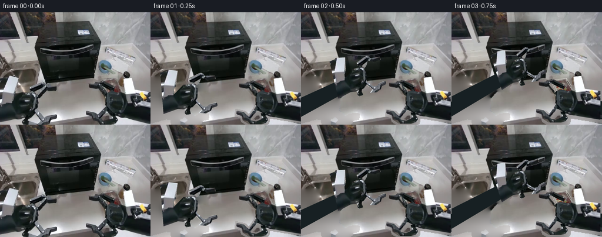
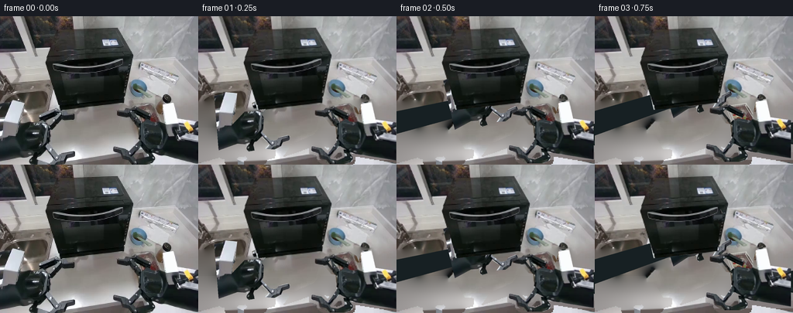
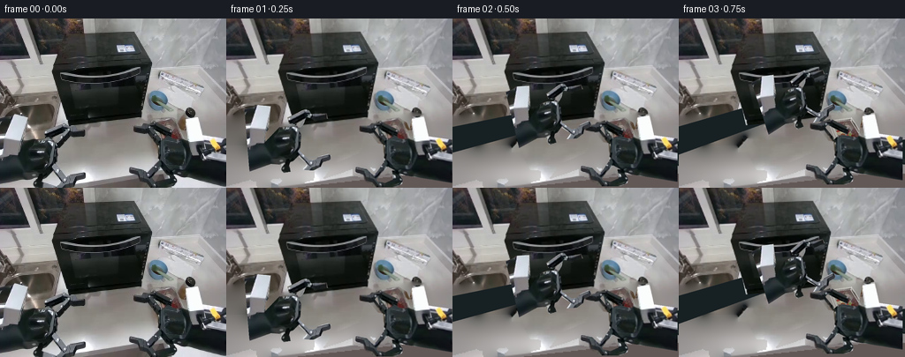
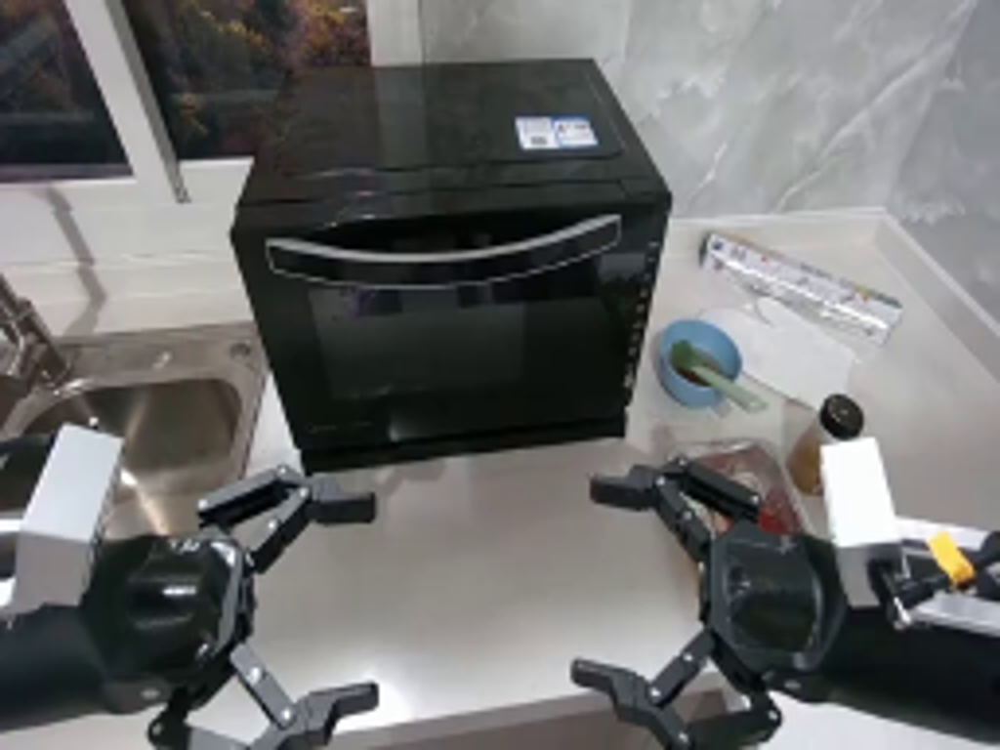
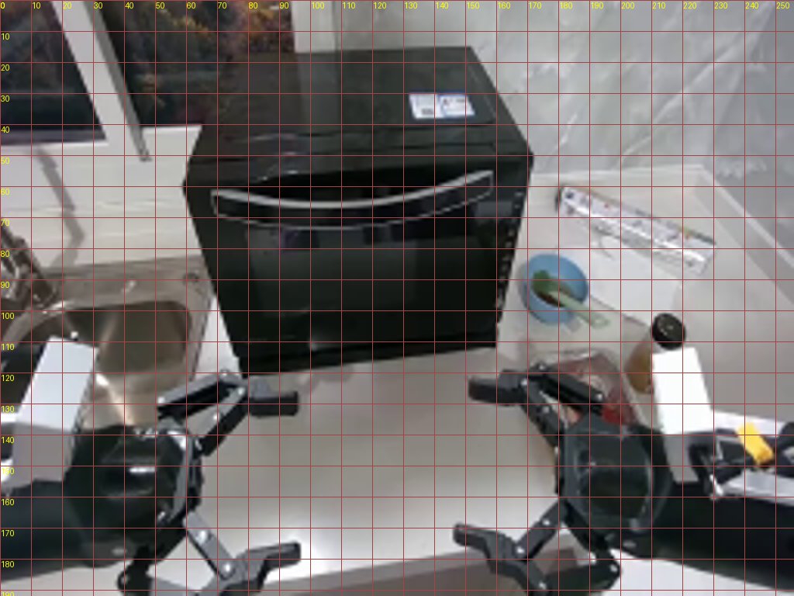
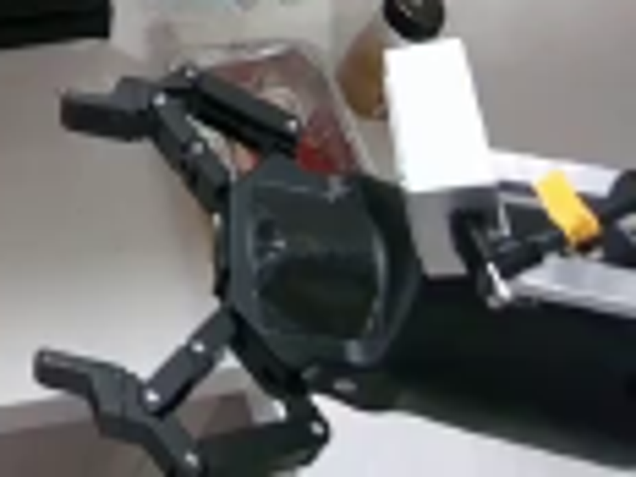
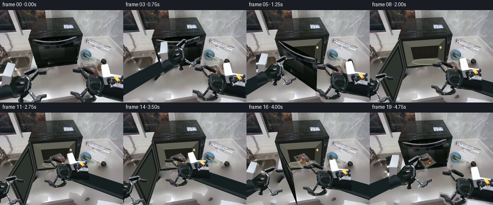
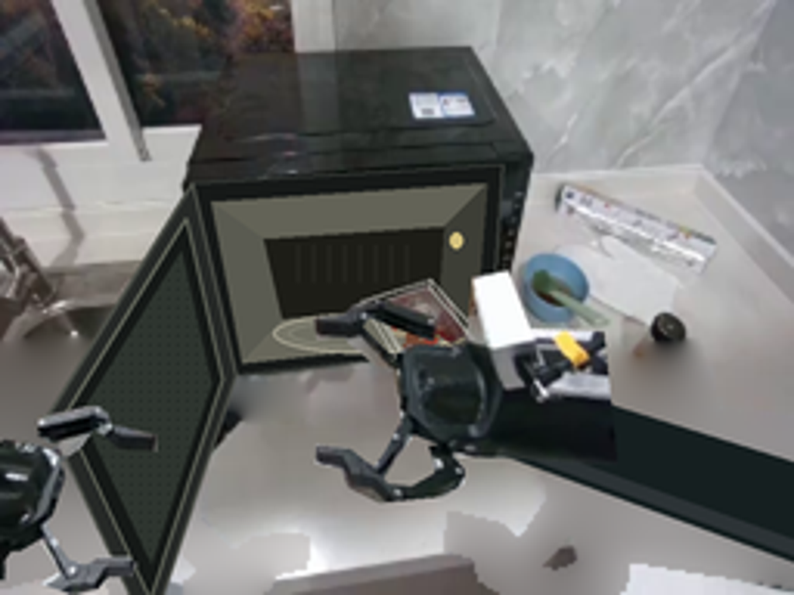
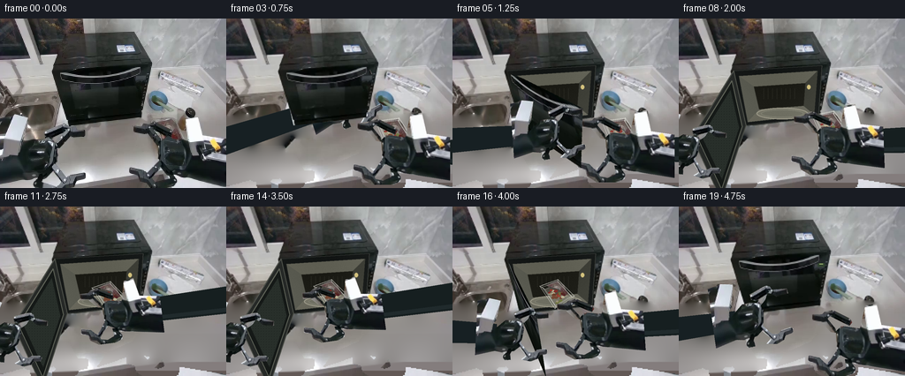

CODING AGENTS AS PIXEL WORLD MODELS
traex/GPT-6.1-Sol · common50_0006
点击播放 · 原生 RGB 像素
逐轮保存的候选
回放视频、检查图与代码变化。
每份候选均可单独播放。实际图片检查记录在下方工具轨迹中。
候选 01播放与检查图
点击播放 · 原生 RGB 像素


展开代码变化
--- 上一保存版本
+++ 本次保存版本
@@ -0,0 +1,230 @@
+from pathlib import Path
+import math
+import numpy as np
+from PIL import Image, ImageDraw, ImageFilter
+from artifact_io import save
+
+ROOT=Path(__file__).parent
+W,H=256,192
+S=3
+src=Image.open(ROOT/'first_frame.png').convert('RGB')
+a=np.asarray(src).copy()
+
+def mask_polys(polys):
+ im=Image.new('L',(W*S,H*S)); d=ImageDraw.Draw(im)
+ for p in polys:d.polygon([(x*S,y*S) for x,y in p],fill=255)
+ return im
+# Rigid components are cut from the input photograph, including all joint hardware.
+rightparts=[
+ [(210,113),(223,112),(229,134),(256,138),(256,187),(207,179),(199,178),(190,172),(179,166),(178,151),(178,141),(184,135),(205,138)],
+ [(151,122),(162,122),(165,119),(172,117),(176,118),(194,127),(196,131),(193,135),(171,124),(168,127),(177,138),(178,143),(172,142),(163,133),(161,130),(151,130)],
+ [(178,164),(183,168),(169,184),(165,181),(172,173)],
+ [(147,168),(159,171),(164,176),(169,180),(171,185),(180,187),(189,183),(188,173),(194,173),(200,183),(199,188),(191,192),(168,192),(157,185),(155,178),(146,175)]
+]
+leftparts=[
+ [(0,113),(11,111),(13,109),(31,112),(26,139),(22,144),(21,154),(39,138),(48,137),(59,139),(64,148),(62,162),(59,173),(52,179),(38,182),(26,180),(0,187)],
+ [(50,127),(68,120),(72,119),(76,121),(78,125),(96,126),(97,132),(82,134),(77,130),(72,128),(62,135),(56,136),(51,134)],
+ [(68,125),(72,128),(68,136),(58,146),(54,143),(63,132)],
+ [(58,164),(66,174),(71,179),(78,180),(83,176),(94,174),(97,176),(96,181),(87,183),(84,188),(75,192),(62,190),(69,184),(63,178),(58,173)],
+ [(40,178),(46,174),(50,177),(47,183),(48,191),(39,192),(37,187)]
+]
+rm=mask_polys(rightparts);lm=mask_polys(leftparts)
+traypoly=[(169,116),(195,112),(204,118),(213,140),(199,148),(183,151),(175,139)]
+tm=mask_polys([traypoly])
+# Fill the unobserved countertop using only neighboring pixels of this frame.
+union=Image.fromarray(np.maximum.reduce([np.asarray(rm.resize((W,H))),np.asarray(lm.resize((W,H))),np.asarray(tm.resize((W,H)))]))
+unknown=np.asarray(union.filter(ImageFilter.MaxFilter(5)))>0
+back=a.astype(float)
+yy,xx=np.mgrid[:H,:W]
+base=np.stack([132+.15*(yy-125),127+.17*(yy-125),124+.20*(yy-125)],-1)
+reflection=55*np.exp(-((yy-177)/17)**2-((xx-93)/65)**2)
+base+=reflection[...,None]
+back[unknown]=base[unknown]
+for k in range(1700):
+ p=np.pad(back,((1,1),(1,1),(0,0)),mode='edge')
+ avg=(p[1:-1,:-2]+p[1:-1,2:]+p[:-2,1:-1]+p[2:,1:-1])/4
+ back[unknown]=avg[unknown]
+# Broad smooth metal shading for the areas once occluded by the arms.
+low=(yy>143)&unknown
+mix=.65*np.clip((yy-143)/30,0,1)
+back[low]=back[low]*(1-mix[low,None])+base[low]*mix[low,None]
+background=Image.fromarray(np.clip(back,0,255).astype('uint8')).resize((W*S,H*S),Image.Resampling.BICUBIC)
+orig=src.resize((W*S,H*S),Image.Resampling.BICUBIC)
+
+def cut(m):
+ im=orig.convert('RGBA');im.putalpha(m);return im
+rtex=cut(rm);ltex=cut(lm)
+
+def trans(im,scale=1,angle=0,pivot=(0,0),dest=(0,0)):
+ t=math.radians(angle);c=math.cos(t)*scale;sn=math.sin(t)*scale
+ A=np.array([[c,-sn],[sn,c]])
+ off=(np.array(dest)-A@np.array(pivot))*S
+ inv=np.linalg.inv(A); io=-inv@off
+ return im.transform((W*S,H*S),Image.Transform.AFFINE,tuple([inv[0,0],inv[0,1],io[0],inv[1,0],inv[1,1],io[1]]),Image.Resampling.BICUBIC)
+
+def smooth(t):
+ t=np.clip(t,0,1);return float(t*t*(3-2*t))
+def lerp(a,b,t):return np.array(a)*(1-t)+np.array(b)*t
+
+def homography(p,q):
+ A=[];b=[]
+ for (x,y),(u,v) in zip(p,q):
+ A.extend([[x,y,1,0,0,0,-u*x,-u*y],[0,0,0,x,y,1,-v*x,-v*y]]);b.extend([u,v])
+ return np.r_[np.linalg.solve(A,b),1].reshape((3,3))
+
+# Extract the original microwave facade. The casing and controls never move.
+doorquad=np.array([[62,59],[162,53],[158,112],[76,121]],float)
+door=orig.convert('RGBA');door.putalpha(mask_polys([doorquad.tolist()]))
+plane=homography([(0,0),(1,0),(1,1),(0,1)],doorquad)
+K=np.array([[220,0,128],[0,220,96],[0,0,1.]])
+au=np.linalg.solve(K,plane[:,0]);av=np.linalg.solve(K,plane[:,1]);normal=np.cross(au,av);normal/=np.linalg.norm(normal)
+if normal[2]>0:normal=-normal
+nd=K@normal*np.linalg.norm(au)
+
+def door_points(deg):
+ t=math.radians(deg); pts=[]
+ for u,v in [(0,0),(1,0),(1,1),(0,1)]:
+ q=plane[:,2]+u*(math.cos(t)*plane[:,0]+math.sin(t)*nd)+v*plane[:,1]
+ pts.append(q[:2]/q[2])
+ return np.array(pts)
+
+def drawpoly(d,p,fill,outline=None,width=1):
+ p=[(float(x)*S,float(y)*S) for x,y in p]
+ d.polygon(p,fill=fill)
+ if outline:d.line(p+[p[0]],fill=outline,width=max(1,int(width*S)),joint='curve')
+
+cavity=Image.new('RGBA',(W*S,H*S));cd=ImageDraw.Draw(cavity)
+drawpoly(cd,doorquad,(22,25,24,255),(58,62,58,255),1)
+# Perspective interior, dark opening and stainless cavity walls.
+drawpoly(cd,[(68,65),(157,59),(153,109),(78,117)],(43,44,39,255))
+drawpoly(cd,[(68,65),(157,59),(143,73),(85,77)],(99,99,87,255))
+drawpoly(cd,[(68,65),(85,77),(91,103),(78,117)],(90,91,81,255))
+drawpoly(cd,[(157,59),(143,73),(141,99),(153,109)],(61,62,54,255))
+drawpoly(cd,[(85,77),(143,73),(141,99),(91,103)],(29,29,23,255))
+drawpoly(cd,[(91,103),(141,99),(153,109),(78,117)],(104,103,91,255),(111,113,100,255),.5)
+# Glass turntable sampled in the image's lighting.
+cd.ellipse((88*S,101*S,146*S,114*S),fill=(118,117,103,255),outline=(164,161,144,255),width=S)
+cd.ellipse((93*S,103*S,141*S,112*S),fill=(111,111,98,255),outline=(128,128,114,255),width=S)
+for x in range(96,135,5):cd.line((x*S,79*S,x*S,91*S),fill=(39,39,32,255),width=S)
+# Small interior light.
+cd.ellipse((145*S,75*S,149*S,80*S),fill=(212,194,126,255))
+
+# Reconstructed hidden portions of the transparent tray are simple rigid geometry;
+# visible vegetable colors and material detail are copied from the source photograph.
+tray=Image.new('RGBA',(W*S,H*S)); td=ImageDraw.Draw(tray)
+bottom=[(175,122),(195,117),(209,140),(185,148)]
+drawpoly(td,bottom,(124,121,107,135),(207,206,195,190),.7)
+# Vegetables, using a fixed deterministic arrangement and the input's local palette.
+rng=np.random.default_rng(17)
+colors=[(139,48,42,230),(157,58,46,235),(160,148,120,235),(191,182,151,235),(112,117,62,230),(115,66,45,230)]
+for j in range(24):
+ u,v=rng.uniform(.12,.9,2)
+ p=(1-u)*(1-v)*np.array(bottom[0])+u*(1-v)*np.array(bottom[1])+u*v*np.array(bottom[2])+(1-u)*v*np.array(bottom[3])
+ rad=rng.uniform(1.6,3.1)
+ td.ellipse(((p[0]-rad)*S,(p[1]-rad*.7)*S,(p[0]+rad)*S,(p[1]+rad*.7)*S),fill=colors[j%len(colors)])
+# Copy visible food texture, without including the occluding robot fingers.
+foodmask=mask_polys([[(178,117),(194,114),(201,121),(205,135),(199,137),(195,133),(193,126),(184,123)]])
+foodmask=np.asarray(foodmask).copy(); foodmask[np.asarray(rm)>80]=0
+food=orig.convert('RGBA');food.putalpha(Image.fromarray(foodmask));tray.alpha_composite(food)
+td=ImageDraw.Draw(tray)
+for edge in [[(169,116),(195,112),(213,140),(183,151),(169,116)],[(172,118),(194,115),(209,139),(184,147),(172,118)]]:
+ td.line([(x*S,y*S) for x,y in edge],fill=(218,218,211,175),width=2,joint='curve')
+for p,q in [((169,116),(175,122)),((195,112),(195,117)),((213,140),(209,140)),((183,151),(185,148))]:
+ td.line((p[0]*S,p[1]*S,q[0]*S,q[1]*S),fill=(224,223,214,180),width=2)
+# Very thin transparent rim highlights.
+td.line((171*S,116*S,195*S,113*S),fill=(237,235,226,220),width=2)
+
+
+def arm_extend(frame, wrist, side, angle=0):
+ # A rigid forearm stays connected outside the camera view as the wrist moves.
+ d=ImageDraw.Draw(frame)
+ if side=='r':
+ p=np.array(wrist); end=np.array([285.,175.]); dv=end-p;n=np.array([-dv[1],dv[0]])/np.linalg.norm(dv)
+ start=p+dv/np.linalg.norm(dv)*21
+ drawpoly(d,[start+n*13,end+n*16,end-n*16,start-n*13],(21,31,32,255),(39,46,47,255),.6)
+ drawpoly(d,[start+n*11,end+n*14,end+n*9,start+n*7],(44,51,54,255))
+ else:
+ p=np.array(wrist);end=np.array([-30.,177.]);dv=end-p;n=np.array([-dv[1],dv[0]])/np.linalg.norm(dv)
+ start=p+dv/np.linalg.norm(dv)*18
+ drawpoly(d,[start+n*11,end+n*16,end-n*16,start-n*11],(23,32,35,255),(42,48,48,255),.5)
+
+def warp_door(deg):
+ q=door_points(deg)
+ hh=homography(doorquad*S,q*S);inv=np.linalg.inv(hh);inv/=inv[2,2]
+ result=door.transform((W*S,H*S),Image.Transform.PERSPECTIVE,tuple(inv.flatten()[:8]),Image.Resampling.BICUBIC)
+ if deg>90:
+ # The back of the rigid door faces the camera past ninety degrees.
+ dd=ImageDraw.Draw(result)
+ drawpoly(dd,q,(38,41,39,255),(77,80,73,255),1.2)
+ inner=q*.84+q.mean(axis=0)*.16
+ drawpoly(dd,inner,(21,25,23,255),(94,98,87,255),1)
+ inner2=inner*.82+inner.mean(axis=0)*.18
+ drawpoly(dd,inner2,(46,53,47,255))
+ # Uniform perforated screen texture on the inner surface.
+ screen=Image.new('RGBA',(W*S,H*S));sd=ImageDraw.Draw(screen)
+ for yy0 in range(60,194,3):
+ for xx0 in range(0,82,3):sd.ellipse((xx0*S,yy0*S,xx0*S+1,yy0*S+1),fill=(11,16,14,130))
+ m=mask_polys([inner2.tolist()]);screen.putalpha(Image.fromarray((np.asarray(screen.getchannel('A')).astype(float)*np.asarray(m)/255).astype('uint8')));result.alpha_composite(screen)
+ return result
+
+frames=[]
+for i in range(20):
+ if i==0:
+ frames.append(a.copy());continue
+ # Opening, lifting, insertion, release, return, and closing are separate phases.
+ if i<=3:deg=0
+ elif i<=7:deg=103*smooth((i-3)/4)
+ elif i<=15:deg=103
+ else:deg=103*(1-smooth((i-15)/3))
+ if i<=3:
+ t=smooth(i/3);lp=lerp((49,157),(117,96),t);ls=1-.16*t;la=-18*t
+ elif i<=7:
+ t=smooth((i-3)/4);lp=lerp((117,96),(7,159),t);ls=.84;la=-18+28*t
+ elif i<=15:lp=np.array([7,159]);ls=.84;la=10
+ elif i<=18:
+ t=smooth((i-15)/3);lp=lerp((7,159),(117,96),t);ls=.84;la=10-28*t
+ else:lp=np.array([83,127]);ls=.92;la=-8
+ if i<=6:
+ t=smooth(i/6);rp=lerp((197,155),(192,148),t);rs=1.;ra=0
+ objmove=0
+ elif i<=12:
+ t=smooth((i-6)/6);rp=lerp((192,148),(128,120),t);rs=1-.16*t;ra=-8*t
+ objmove=t
+ elif i<=14:
+ rp=np.array([128,120]);rs=.84;ra=-8;objmove=1
+ else:
+ t=smooth((i-14)/4);rp=lerp((128,120),(197,155),t);rs=.84+.16*t;ra=-8*(1-t);objmove=1
+ frame=background.convert('RGBA')
+ if deg>.001:frame.alpha_composite(cavity)
+ else:frame.alpha_composite(door)
+ # The tray does not move until the fingers have made contact.
+ if i<=6:
+ if i<=2:
+ # Keep the initial observed tray appearance for the first contact phase.
+ tt=orig.convert('RGBA');tt.putalpha(tm);frame.alpha_composite(tt)
+ else:frame.alpha_composite(tray)
+ elif i<=12:
+ # Pivoted rigid tray follows the right wrist throughout the carrying phase.
+ scale=1-.18*objmove
+ pos=lerp((191,132),(119,99),objmove)
+ frame.alpha_composite(trans(tray,scale,-12*objmove,(191,132),pos))
+ else:
+ # Settled tray lies on the turntable, with a small depth/compression cue.
+ pos=(119,101)
+ frame.alpha_composite(trans(tray,.82,-12,(191,132),pos))
+ # Arms in front of the objects; original photographic joints do not deform.
+ if i>1:arm_extend(frame,rp,'r',ra)
+ frame.alpha_composite(trans(rtex,rs,ra,(197,155),rp))
+ if i>1:arm_extend(frame,lp,'l',la)
+ frame.alpha_composite(trans(ltex,ls,la,(49,157),lp))
+ if deg>.001:frame.alpha_composite(warp_door(deg))
+ # Left gripper is in contact with the swung door and should remain in front.
+ if i>=4:frame.alpha_composite(trans(ltex,ls,la,(49,157),lp))
+ # A subtle status indicator appears once the microwave is closed.
+ if i>=18:
+ d=ImageDraw.Draw(frame);d.rounded_rectangle((157*S,64*S,165*S,68*S),radius=S,fill=(49,67,47,255))
+ d.line((159*S,65*S,163*S,65*S),fill=(160,182,113,255),width=S)
+ frames.append(np.asarray(frame.convert('RGB').resize((W,H),Image.Resampling.LANCZOS)))
+frames=np.stack(frames).astype(np.uint8)
+save(frames,ROOT)
+Image.fromarray(frames[10]).resize((1024,768)).save(ROOT/'midpoint.png')
候选 02播放与检查图
点击播放 · 原生 RGB 像素


展开代码变化
--- 上一保存版本
+++ 本次保存版本
@@ -16,7 +16,7 @@
return im
# Rigid components are cut from the input photograph, including all joint hardware.
rightparts=[
- [(210,113),(223,112),(229,134),(256,138),(256,187),(207,179),(199,178),(190,172),(179,166),(178,151),(178,141),(184,135),(205,138)],
+ [(211,112),(224,110),(229,134),(256,138),(256,187),(207,179),(199,178),(190,172),(179,166),(178,151),(178,141),(184,135),(205,138)],
[(151,122),(162,122),(165,119),(172,117),(176,118),(194,127),(196,131),(193,135),(171,124),(168,127),(177,138),(178,143),(172,142),(163,133),(161,130),(151,130)],
[(178,164),(183,168),(169,184),(165,181),(172,173)],
[(147,168),(159,171),(164,176),(169,180),(171,185),(180,187),(189,183),(188,173),(194,173),(200,183),(199,188),(191,192),(168,192),(157,185),(155,178),(146,175)]
@@ -34,6 +34,9 @@
# Fill the unobserved countertop using only neighboring pixels of this frame.
union=Image.fromarray(np.maximum.reduce([np.asarray(rm.resize((W,H))),np.asarray(lm.resize((W,H))),np.asarray(tm.resize((W,H)))]))
unknown=np.asarray(union.filter(ImageFilter.MaxFilter(5)))>0
+# Remove only transient robot shadows alongside the original hands.
+shadow=mask_polys([[(183,111),(214,106),(231,112),(235,143),(214,166),(179,172),(154,166),(137,172),(111,181),(121,166),(150,153),(166,135)],[(21,158),(76,152),(88,174),(66,180),(31,184)]])
+unknown |= np.asarray(shadow.resize((W,H)))>0
back=a.astype(float)
yy,xx=np.mgrid[:H,:W]
base=np.stack([132+.15*(yy-125),127+.17*(yy-125),124+.20*(yy-125)],-1)
@@ -46,8 +49,17 @@
back[unknown]=avg[unknown]
# Broad smooth metal shading for the areas once occluded by the arms.
low=(yy>143)&unknown
-mix=.65*np.clip((yy-143)/30,0,1)
+mix=.70*np.clip((yy-135)/40,0,1)
back[low]=back[low]*(1-mix[low,None])+base[low]*mix[low,None]
+# Rebuild the exposed edge of the countertop with the perspective already in the image.
+for x in range(W):
+ edge=184.5-.04*(x-100) if x<115 else 184-.115*(x-115)
+ for y in range(176,H):
+ if not unknown[y,x]:continue
+ if y>edge:
+ t=min(1,(y-edge)/2)
+ value=np.array([132,125,125]) if y<185.5 else np.array([99,89,86])
+ back[y,x]=back[y,x]*(1-t)+value*t
background=Image.fromarray(np.clip(back,0,255).astype('uint8')).resize((W*S,H*S),Image.Resampling.BICUBIC)
orig=src.resize((W*S,H*S),Image.Resampling.BICUBIC)
@@ -108,6 +120,14 @@
for x in range(96,135,5):cd.line((x*S,79*S,x*S,91*S),fill=(39,39,32,255),width=S)
# Small interior light.
cd.ellipse((145*S,75*S,149*S,80*S),fill=(212,194,126,255))
+
+
+# Moderate sensor grain and diffuse luminance maintain the photograph's material appearance.
+cav=np.array(cavity).copy();gy,gx=np.mgrid[:H*S,:W*S]
+grng=np.random.default_rng(29);grain=grng.normal(0,1.45,(H*S,W*S))
+light=3*np.sin(gx/67)+2*np.sin(gy/41)+grain
+cav[:,:,:3]=np.clip(cav[:,:,:3].astype(float)+light[:,:,None],0,255).astype('uint8')
+cavity=Image.fromarray(cav).filter(ImageFilter.GaussianBlur(.65))
# Reconstructed hidden portions of the transparent tray are simple rigid geometry;
# visible vegetable colors and material detail are copied from the source photograph.
@@ -139,14 +159,14 @@
# A rigid forearm stays connected outside the camera view as the wrist moves.
d=ImageDraw.Draw(frame)
if side=='r':
- p=np.array(wrist); end=np.array([285.,175.]); dv=end-p;n=np.array([-dv[1],dv[0]])/np.linalg.norm(dv)
+ p=np.array(wrist); th=math.radians(angle);end=p+np.array([math.cos(th),math.sin(th)])*160; dv=end-p;n=np.array([-dv[1],dv[0]])/np.linalg.norm(dv)
start=p+dv/np.linalg.norm(dv)*21
- drawpoly(d,[start+n*13,end+n*16,end-n*16,start-n*13],(21,31,32,255),(39,46,47,255),.6)
- drawpoly(d,[start+n*11,end+n*14,end+n*9,start+n*7],(44,51,54,255))
+ drawpoly(d,[start+n*13,end+n*16,end-n*16,start-n*13],(22,31,32,255),(35,42,43,255),.6)
+ drawpoly(d,[start+n*11,end+n*14,end+n*9,start+n*7],(32,42,44,255))
else:
- p=np.array(wrist);end=np.array([-30.,177.]);dv=end-p;n=np.array([-dv[1],dv[0]])/np.linalg.norm(dv)
+ p=np.array(wrist);th=math.radians(angle);end=p-np.array([math.cos(th),math.sin(th)])*170;dv=end-p;n=np.array([-dv[1],dv[0]])/np.linalg.norm(dv)
start=p+dv/np.linalg.norm(dv)*18
- drawpoly(d,[start+n*11,end+n*16,end-n*16,start-n*11],(23,32,35,255),(42,48,48,255),.5)
+ drawpoly(d,[start+n*11,end+n*16,end-n*16,start-n*11],(23,32,35,255),(36,42,42,255),.5)
def warp_door(deg):
q=door_points(deg)
@@ -159,7 +179,7 @@
inner=q*.84+q.mean(axis=0)*.16
drawpoly(dd,inner,(21,25,23,255),(94,98,87,255),1)
inner2=inner*.82+inner.mean(axis=0)*.18
- drawpoly(dd,inner2,(46,53,47,255))
+ drawpoly(dd,inner2,(40,47,42,255))
# Uniform perforated screen texture on the inner surface.
screen=Image.new('RGBA',(W*S,H*S));sd=ImageDraw.Draw(screen)
for yy0 in range(60,194,3):
@@ -177,12 +197,18 @@
elif i<=15:deg=103
else:deg=103*(1-smooth((i-15)/3))
if i<=3:
- t=smooth(i/3);lp=lerp((49,157),(117,96),t);ls=1-.16*t;la=-18*t
+ t=smooth(i/3);lp=lerp((49,157),(133,95),t);ls=1-.16*t;la=-18*t
elif i<=7:
- t=smooth((i-3)/4);lp=lerp((117,96),(7,159),t);ls=.84;la=-18+28*t
- elif i<=15:lp=np.array([7,159]);ls=.84;la=10
+ t=smooth((i-3)/4);ls=.84;la=-18+28*t
+ dq=door_points(deg);hh=homography([(0,0),(1,0),(1,1),(0,1)],dq);qq=hh@np.array([.8,.15,1]);contact=qq[:2]/qq[2]
+ th=math.radians(la);rot=np.array([[math.cos(th),-math.sin(th)],[math.sin(th),math.cos(th)]])*ls
+ lp=contact-rot@np.array([23,-31])
+ elif i<=15:lp=np.array([10.4,148.4]);ls=.84;la=10
elif i<=18:
- t=smooth((i-15)/3);lp=lerp((7,159),(117,96),t);ls=.84;la=10-28*t
+ t=smooth((i-15)/3);ls=.84;la=10-28*t
+ dq=door_points(deg);hh=homography([(0,0),(1,0),(1,1),(0,1)],dq);qq=hh@np.array([.8,.15,1]);contact=qq[:2]/qq[2]
+ th=math.radians(la);rot=np.array([[math.cos(th),-math.sin(th)],[math.sin(th),math.cos(th)]])*ls
+ lp=contact-rot@np.array([23,-31])
else:lp=np.array([83,127]);ls=.92;la=-8
if i<=6:
t=smooth(i/6);rp=lerp((197,155),(192,148),t);rs=1.;ra=0
@@ -210,14 +236,14 @@
frame.alpha_composite(trans(tray,scale,-12*objmove,(191,132),pos))
else:
# Settled tray lies on the turntable, with a small depth/compression cue.
- pos=(119,101)
+ pos=(119,99)
frame.alpha_composite(trans(tray,.82,-12,(191,132),pos))
# Arms in front of the objects; original photographic joints do not deform.
if i>1:arm_extend(frame,rp,'r',ra)
frame.alpha_composite(trans(rtex,rs,ra,(197,155),rp))
if i>1:arm_extend(frame,lp,'l',la)
frame.alpha_composite(trans(ltex,ls,la,(49,157),lp))
- if deg>.001:frame.alpha_composite(warp_door(deg))
+ frame.alpha_composite(warp_door(deg))
# Left gripper is in contact with the swung door and should remain in front.
if i>=4:frame.alpha_composite(trans(ltex,ls,la,(49,157),lp))
# A subtle status indicator appears once the microwave is closed.
候选 03播放与检查图
点击播放 · 原生 RGB 像素


展开代码变化
--- 上一保存版本
+++ 本次保存版本
@@ -53,12 +53,12 @@
back[low]=back[low]*(1-mix[low,None])+base[low]*mix[low,None]
# Rebuild the exposed edge of the countertop with the perspective already in the image.
for x in range(W):
- edge=184.5-.04*(x-100) if x<115 else 184-.115*(x-115)
+ edge=184.8-.115*(x-100)
for y in range(176,H):
- if not unknown[y,x]:continue
+ if not unknown[y,x] and y<edge-1:continue
if y>edge:
t=min(1,(y-edge)/2)
- value=np.array([132,125,125]) if y<185.5 else np.array([99,89,86])
+ value=np.array([128,121,121]) if y<edge+4 else np.array([98,88,86])
back[y,x]=back[y,x]*(1-t)+value*t
background=Image.fromarray(np.clip(back,0,255).astype('uint8')).resize((W*S,H*S),Image.Resampling.BICUBIC)
orig=src.resize((W*S,H*S),Image.Resampling.BICUBIC)
@@ -125,7 +125,11 @@
# Moderate sensor grain and diffuse luminance maintain the photograph's material appearance.
cav=np.array(cavity).copy();gy,gx=np.mgrid[:H*S,:W*S]
grng=np.random.default_rng(29);grain=grng.normal(0,1.45,(H*S,W*S))
-light=3*np.sin(gx/67)+2*np.sin(gy/41)+grain
+light=5*np.sin(gx/67)+3*np.sin(gy/41)+grain
+# Use grain/reflections from the black metal casing for cavity wall materials.
+metal=np.asarray(src.crop((78,20,151,48)).convert('L').resize((W*S,H*S),Image.Resampling.BICUBIC)).astype(float)
+metal=(metal-metal.mean())*.25
+light+=metal
cav[:,:,:3]=np.clip(cav[:,:,:3].astype(float)+light[:,:,None],0,255).astype('uint8')
cavity=Image.fromarray(cav).filter(ImageFilter.GaussianBlur(.65))
@@ -245,7 +249,7 @@
frame.alpha_composite(trans(ltex,ls,la,(49,157),lp))
frame.alpha_composite(warp_door(deg))
# Left gripper is in contact with the swung door and should remain in front.
- if i>=4:frame.alpha_composite(trans(ltex,ls,la,(49,157),lp))
+ frame.alpha_composite(trans(ltex,ls,la,(49,157),lp))
# A subtle status indicator appears once the microwave is closed.
if i>=18:
d=ImageDraw.Draw(frame);d.rounded_rectangle((157*S,64*S,165*S,68*S),radius=S,fill=(49,67,47,255))
候选 04播放与检查图
点击播放 · 原生 RGB 像素
展开代码变化
--- 上一保存版本
+++ 本次保存版本
@@ -159,6 +159,17 @@
td.line((171*S,116*S,195*S,113*S),fill=(237,235,226,220),width=2)
+# Extrapolate the hidden forearm with black-metal pixels from the same robot.
+linktex=src.crop((222,164,256,179)).resize((102,45),Image.Resampling.BICUBIC).convert('RGBA')
+def link_surface(frame,q):
+ iw,ih=linktex.size
+ hp=homography([(0,0),(iw,0),(iw,ih),(0,ih)],np.array(q)*S)
+ hp=np.linalg.inv(hp);hp/=hp[2,2]
+ texture=linktex.transform((W*S,H*S),Image.Transform.PERSPECTIVE,tuple(hp.flatten()[:8]),Image.Resampling.BICUBIC)
+ clip=mask_polys([[tuple(p) for p in q]])
+ texture.putalpha(Image.fromarray((np.asarray(texture.getchannel('A')).astype(float)*np.asarray(clip)/255).astype('uint8')))
+ frame.alpha_composite(texture)
+
def arm_extend(frame, wrist, side, angle=0):
# A rigid forearm stays connected outside the camera view as the wrist moves.
d=ImageDraw.Draw(frame)
@@ -166,11 +177,12 @@
p=np.array(wrist); th=math.radians(angle);end=p+np.array([math.cos(th),math.sin(th)])*160; dv=end-p;n=np.array([-dv[1],dv[0]])/np.linalg.norm(dv)
start=p+dv/np.linalg.norm(dv)*21
drawpoly(d,[start+n*13,end+n*16,end-n*16,start-n*13],(22,31,32,255),(35,42,43,255),.6)
- drawpoly(d,[start+n*11,end+n*14,end+n*9,start+n*7],(32,42,44,255))
+ link_surface(frame,[start-n*13,end-n*16,end+n*16,start+n*13])
else:
p=np.array(wrist);th=math.radians(angle);end=p-np.array([math.cos(th),math.sin(th)])*170;dv=end-p;n=np.array([-dv[1],dv[0]])/np.linalg.norm(dv)
start=p+dv/np.linalg.norm(dv)*18
drawpoly(d,[start+n*11,end+n*16,end-n*16,start-n*11],(23,32,35,255),(36,42,42,255),.5)
+ link_surface(frame,[start-n*11,end-n*16,end+n*16,start+n*11])
def warp_door(deg):
q=door_points(deg)
候选 05播放与检查图
可观测工具轨迹
实际执行的命令与返回图片。
命令 1exit 0
/bin/bash -lc "ls -la && cat prompt.txt && printf '\\n---RULES---\\n' && cat GENERATION_RULES.md"
命令 2exit 0
/bin/bash -lc "cat task_spec.json && cat artifact_io.py && python - <<'PY'
from PIL import Image
im=Image.open('first_frame.png'); print(im.size); im.resize((1024,768)).save('first_frame_large.png')
PY"命令 3exit 0
/bin/bash -lc "python - <<'PY'
from PIL import Image,ImageDraw
im=Image.open('first_frame.png').resize((1024,768));d=ImageDraw.Draw(im)
for x in range(0,256,10):
d.line((x*4,0,x*4,768),fill=(160,70,70),width=1);d.text((x*4+1,1),str(x),fill='yellow')
for y in range(0,192,10):
d.line((0,y*4,1024,y*4),fill=(160,70,70),width=1);d.text((1,y*4+1),str(y),fill='yellow')
im.save('grid.png')
PY"命令 4exit 0
/bin/bash -lc "python - <<'PY'
from PIL import Image
im=Image.open('first_frame.png');im.crop((140,105,256,192)).resize((928,696)).save('right_crop.png')
PY"命令 5exit 0
/bin/bash -lc "python - <<'PY'
import numpy as np
from PIL import Image
im=np.array(Image.open('first_frame.png'))
for y in [110,125,140,155,170,180,190]:
print(y,[(x,im[y,x].tolist()) for x in [5,40,100,120,140,160,230,250]])
PY"命令 6exit 0
/bin/bash -lc "python - <<'PY' import numpy as np p=np.array([[62,59],[162,53],[158,112],[76,121]],float) # find homography normalized u v A=[];b=[] for (u,v),(x,y) in zip([(0,0),(1,0),(1,1),(0,1)],p): A.extend([[u,v,1,0,0,0,-x*u,-x*v],[0,0,0,u,v,1,-y*u,-y*v]]);b.extend([x,y]) h=np.r_[np.linalg.solve(A,b),1].reshape(3,3) K=np.array([[220,0,128],[0,220,96],[0,0,1]]) a=np.linalg.solve(K,h[:,0]);bb=np.linalg.solve(K,h[:,1]);n=np.cross(a,bb);n/=np.linalg.norm(n);n=-n if n[2]>0 else n C=K@n*np.linalg.norm(a) print(h,a,bb,n,C) for angle in[0,25,55,80,100]: pts=[] for u,v in [(0,0),(1,0),(1,1),(0,1)]: q=h[:,2]+u*np.cos(np.deg2rad(angle))*h[:,0]+v*h[:,1]+u*np.sin(np.deg2rad(angle))*C pts.append(q[:2]/q[2]) print(angle,pts) PY"
命令 7exit 0
/bin/bash -lc "cat > generate.py <<'PY'
from pathlib import Path
import math
import numpy as np
from PIL import Image, ImageDraw, ImageFilter
from artifact_io import save
ROOT=Path(__file__).parent
W,H=256,192
S=3
src=Image.open(ROOT/'first_frame.png').convert('RGB')
a=np.asarray(src).copy()
def mask_polys(polys):
im=Image.new('L',(W*S,H*S)); d=ImageDraw.Draw(im)
for p in polys:d.polygon([(x*S,y*S) for x,y in p],fill=255)
return im
# Rigid components are cut from the input photograph, including all joint hardware.
rightparts=[
[(210,113),(223,112),(229,134),(256,138),(256,187),(207,179),(199,178),(190,172),(179,166),(178,151),(178,141),(184,135),(205,138)],
[(151,122),(162,122),(165,119),(172,117),(176,118),(194,127),(196,131),(193,135),(171,124),(168,127),(177,138),(178,143),(172,142),(163,133),(161,130),(151,130)],
[(178,164),(183,168),(169,184),(165,181),(172,173)],
[(147,168),(159,171),(164,176),(169,180),(171,185),(180,187),(189,183),(188,173),(194,173),(200,183),(199,188),(191,192),(168,192),(157,185),(155,178),(146,175)]
]
leftparts=[
[(0,113),(11,111),(13,109),(31,112),(26,139),(22,144),(21,154),(39,138),(48,137),(59,139),(64,148),(62,162),(59,173),(52,179),(38,182),(26,180),(0,187)],
[(50,127),(68,120),(72,119),(76,121),(78,125),(96,126),(97,132),(82,134),(77,130),(72,128),(62,135),(56,136),(51,134)],
[(68,125),(72,128),(68,136),(58,146),(54,143),(63,132)],
[(58,164),(66,174),(71,179),(78,180),(83,176),(94,174),(97,176),(96,181),(87,183),(84,188),(75,192),(62,190),(69,184),(63,178),(58,173)],
[(40,178),(46,174),(50,177),(47,183),(48,191),(39,192),(37,187)]
]
rm=mask_polys(rightparts);lm=mask_polys(leftparts)
traypoly=[(169,116),(195,112),(204,118),(213,140),(199,148),(183,151),(175,139)]
tm=mask_polys([traypoly])
# Fill the unobserved countertop using only neighboring pixels of this frame.
union=Image.fromarray(np.maximum.reduce([np.asarray(rm.resize((W,H))),np.asarray(lm.resize((W,H))),np.asarray(tm.resize((W,H)))]))
unknown=np.asarray(union.filter(ImageFilter.MaxFilter(5)))>0
back=a.astype(float)
yy,xx=np.mgrid[:H,:W]
base=np.stack([132+.15*(yy-125),127+.17*(yy-125),124+.20*(yy-125)],-1)
reflection=55*np.exp(-((yy-177)/17)**2-((xx-93)/65)**2)
base+=reflection[...,None]
back[unknown]=base[unknown]
for k in range(1700):
p=np.pad(back,((1,1),(1,1),(0,0)),mode='edge')
avg=(p[1:-1,:-2]+p[1:-1,2:]+p[:-2,1:-1]+p[2:,1:-1])/4
back[unknown]=avg[unknown]
# Broad smooth metal shading for the areas once occluded by the arms.
low=(yy>143)&unknown
mix=.65*np.clip((yy-143)/30,0,1)
back[low]=back[low]*(1-mix[low,None])+base[low]*mix[low,None]
background=Image.fromarray(np.clip(back,0,255).astype('uint8')).resize((W*S,H*S),Image.Resampling.BICUBIC)
orig=src.resize((W*S,H*S),Image.Resampling.BICUBIC)
def cut(m):
im=orig.convert('RGBA');im.putalpha(m);return im
rtex=cut(rm);ltex=cut(lm)
def trans(im,scale=1,angle=0,pivot=(0,0),dest=(0,0)):
t=math.radians(angle);c=math.cos(t)*scale;sn=math.sin(t)*scale
A=np.array([[c,-sn],[sn,c]])
off=(np.array(dest)-A@np.array(pivot))*S
inv=np.linalg.inv(A); io=-inv@off
return im.transform((W*S,H*S),Image.Transform.AFFINE,tuple([inv[0,0],inv[0,1],io[0],inv[1,0],inv[1,1],io[1]]),Image.Resampling.BICUBIC)
def smooth(t):
t=np.clip(t,0,1);return float(t*t*(3-2*t))
def lerp(a,b,t):return np.array(a)*(1-t)+np.array(b)*t
def homography(p,q):
A=[];b=[]
for (x,y),(u,v) in zip(p,q):
A.extend([[x,y,1,0,0,0,-u*x,-u*y],[0,0,0,x,y,1,-v*x,-v*y]]);b.extend([u,v])
return np.r_[np.linalg.solve(A,b),1].reshape((3,3))
# Extract the original microwave facade. The casing and controls never move.
doorquad=np.array([[62,59],[162,53],[158,112],[76,121]],float)
door=orig.convert('RGBA');door.putalpha(mask_polys([doorquad.tolist()]))
plane=homography([(0,0),(1,0),(1,1),(0,1)],doorquad)
K=np.array([[220,0,128],[0,220,96],[0,0,1.]])
au=np.linalg.solve(K,plane[:,0]);av=np.linalg.solve(K,plane[:,1]);normal=np.cross(au,av);normal/=np.linalg.norm(normal)
if normal[2]>0:normal=-normal
nd=K@normal*np.linalg.norm(au)
def door_points(deg):
t=math.radians(deg); pts=[]
for u,v in [(0,0),(1,0),(1,1),(0,1)]:
q=plane[:,2]+u*(math.cos(t)*plane[:,0]+math.sin(t)*nd)+v*plane[:,1]
pts.append(q[:2]/q[2])
return np.array(pts)
def drawpoly(d,p,fill,outline=None,width=1):
p=[(float(x)*S,float(y)*S) for x,y in p]
d.polygon(p,fill=fill)
if outline:d.line(p+[p[0]],fill=outline,width=max(1,int(width*S)),joint='curve')
cavity=Image.new('RGBA',(W*S,H*S));cd=ImageDraw.Draw(cavity)
drawpoly(cd,doorquad,(22,25,24,255),(58,62,58,255),1)
# Perspective interior, dark opening and stainless cavity walls.
drawpoly(cd,[(68,65),(157,59),(153,109),(78,117)],(43,44,39,255))
drawpoly(cd,[(68,65),(157,59),(143,73),(85,77)],(99,99,87,255))
drawpoly(cd,[(68,65),(85,77),(91,103),(78,117)],(90,91,81,255))
drawpoly(cd,[(157,59),(143,73),(141,99),(153,109)],(61,62,54,255))
drawpoly(cd,[(85,77),(143,73),(141,99),(91,103)],(29,29,23,255))
drawpoly(cd,[(91,103),(141,99),(153,109),(78,117)],(104,103,91,255),(111,113,100,255),.5)
# Glass turntable sampled in the image's lighting.
cd.ellipse((88*S,101*S,146*S,114*S),fill=(118,117,103,255),outline=(164,161,144,255),width=S)
cd.ellipse((93*S,103*S,141*S,112*S),fill=(111,111,98,255),outline=(128,128,114,255),width=S)
for x in range(96,135,5):cd.line((x*S,79*S,x*S,91*S),fill=(39,39,32,255),width=S)
# Small interior light.
cd.ellipse((145*S,75*S,149*S,80*S),fill=(212,194,126,255))
# Reconstructed hidden portions of the transparent tray are simple rigid geometry;
# visible vegetable colors and material detail are copied from the source photograph.
tray=Image.new('RGBA',(W*S,H*S)); td=ImageDraw.Draw(tray)
bottom=[(175,122),(195,117),(209,140),(185,148)]
drawpoly(td,bottom,(124,121,107,135),(207,206,195,190),.7)
# Vegetables, using a fixed deterministic arrangement and the input's local palette.
rng=np.random.default_rng(17)
colors=[(139,48,42,230),(157,58,46,235),(160,148,120,235),(191,182,151,235),(112,117,62,230),(115,66,45,230)]
for j in range(24):
u,v=rng.uniform(.12,.9,2)
p=(1-u)*(1-v)*np.array(bottom[0])+u*(1-v)*np.array(bottom[1])+u*v*np.array(bottom[2])+(1-u)*v*np.array(bottom[3])
rad=rng.uniform(1.6,3.1)
td.ellipse(((p[0]-rad)*S,(p[1]-rad*.7)*S,(p[0]+rad)*S,(p[1]+rad*.7)*S),fill=colors[j%len(colors)])
# Copy visible food texture, without including the occluding robot fingers.
foodmask=mask_polys([[(178,117),(194,114),(201,121),(205,135),(199,137),(195,133),(193,126),(184,123)]])
foodmask=np.asarray(foodmask).copy(); foodmask[np.asarray(rm)>80]=0
food=orig.convert('RGBA');food.putalpha(Image.fromarray(foodmask));tray.alpha_composite(food)
td=ImageDraw.Draw(tray)
for edge in [[(169,116),(195,112),(213,140),(183,151),(169,116)],[(172,118),(194,115),(209,139),(184,147),(172,118)]]:
td.line([(x*S,y*S) for x,y in edge],fill=(218,218,211,175),width=2,joint='curve')
for p,q in [((169,116),(175,122)),((195,112),(195,117)),((213,140),(209,140)),((183,151),(185,148))]:
td.line((p[0]*S,p[1]*S,q[0]*S,q[1]*S),fill=(224,223,214,180),width=2)
# Very thin transparent rim highlights.
td.line((171*S,116*S,195*S,113*S),fill=(237,235,226,220),width=2)
def arm_extend(frame, wrist, side, angle=0):
# A rigid forearm stays connected outside the camera view as the wrist moves.
d=ImageDraw.Draw(frame)
if side=='r':
p=np.array(wrist); end=np.array([285.,175.]); dv=end-p;n=np.array([-dv[1],dv[0]])/np.linalg.norm(dv)
start=p+dv/np.linalg.norm(dv)*21
drawpoly(d,[start+n*13,end+n*16,end-n*16,start-n*13],(21,31,32,255),(39,46,47,255),.6)
drawpoly(d,[start+n*11,end+n*14,end+n*9,start+n*7],(44,51,54,255))
else:
p=np.array(wrist);end=np.array([-30.,177.]);dv=end-p;n=np.array([-dv[1],dv[0]])/np.linalg.norm(dv)
start=p+dv/np.linalg.norm(dv)*18
drawpoly(d,[start+n*11,end+n*16,end-n*16,start-n*11],(23,32,35,255),(42,48,48,255),.5)
def warp_door(deg):
q=door_points(deg)
hh=homography(doorquad*S,q*S);inv=np.linalg.inv(hh);inv/=inv[2,2]
result=door.transform((W*S,H*S),Image.Transform.PERSPECTIVE,tuple(inv.flatten()[:8]),Image.Resampling.BICUBIC)
if deg>90:
# The back of the rigid door faces the camera past ninety degrees.
dd=ImageDraw.Draw(result)
drawpoly(dd,q,(38,41,39,255),(77,80,73,255),1.2)
inner=q*.84+q.mean(axis=0)*.16
drawpoly(dd,inner,(21,25,23,255),(94,98,87,255),1)
inner2=inner*.82+inner.mean(axis=0)*.18
drawpoly(dd,inner2,(46,53,47,255))
# Uniform perforated screen texture on the inner surface.
screen=Image.new('RGBA',(W*S,H*S));sd=ImageDraw.Draw(screen)
for yy0 in range(60,194,3):
for xx0 in range(0,82,3):sd.ellipse((xx0*S,yy0*S,xx0*S+1,yy0*S+1),fill=(11,16,14,130))
m=mask_polys([inner2.tolist()]);screen.putalpha(Image.fromarray((np.asarray(screen.getchannel('A')).astype(float)*np.asarray(m)/255).astype('uint8')));result.alpha_composite(screen)
return result
frames=[]
for i in range(20):
if i==0:
frames.append(a.copy());continue
# Opening, lifting, insertion, release, return, and closing are separate phases.
if i<=3:deg=0
elif i<=7:deg=103*smooth((i-3)/4)
elif i<=15:deg=103
else:deg=103*(1-smooth((i-15)/3))
if i<=3:
t=smooth(i/3);lp=lerp((49,157),(117,96),t);ls=1-.16*t;la=-18*t
elif i<=7:
t=smooth((i-3)/4);lp=lerp((117,96),(7,159),t);ls=.84;la=-18+28*t
elif i<=15:lp=np.array([7,159]);ls=.84;la=10
elif i<=18:
t=smooth((i-15)/3);lp=lerp((7,159),(117,96),t);ls=.84;la=10-28*t
else:lp=np.array([83,127]);ls=.92;la=-8
if i<=6:
t=smooth(i/6);rp=lerp((197,155),(192,148),t);rs=1.;ra=0
objmove=0
elif i<=12:
t=smooth((i-6)/6);rp=lerp((192,148),(128,120),t);rs=1-.16*t;ra=-8*t
objmove=t
elif i<=14:
rp=np.array([128,120]);rs=.84;ra=-8;objmove=1
else:
t=smooth((i-14)/4);rp=lerp((128,120),(197,155),t);rs=.84+.16*t;ra=-8*(1-t);objmove=1
frame=background.convert('RGBA')
if deg>.001:frame.alpha_composite(cavity)
else:frame.alpha_composite(door)
# The tray does not move until the fingers have made contact.
if i<=6:
if i<=2:
# Keep the initial observed tray appearance for the first contact phase.
tt=orig.convert('RGBA');tt.putalpha(tm);frame.alpha_composite(tt)
else:frame.alpha_composite(tray)
elif i<=12:
# Pivoted rigid tray follows the right wrist throughout the carrying phase.
scale=1-.18*objmove
pos=lerp((191,132),(119,99),objmove)
frame.alpha_composite(trans(tray,scale,-12*objmove,(191,132),pos))
else:
# Settled tray lies on the turntable, with a small depth/compression cue.
pos=(119,101)
frame.alpha_composite(trans(tray,.82,-12,(191,132),pos))
# Arms in front of the objects; original photographic joints do not deform.
if i>1:arm_extend(frame,rp,'r',ra)
frame.alpha_composite(trans(rtex,rs,ra,(197,155),rp))
if i>1:arm_extend(frame,lp,'l',la)
frame.alpha_composite(trans(ltex,ls,la,(49,157),lp))
if deg>.001:frame.alpha_composite(warp_door(deg))
# Left gripper is in contact with the swung door and should remain in front.
if i>=4:frame.alpha_composite(trans(ltex,ls,la,(49,157),lp))
# A subtle status indicator appears once the microwave is closed.
if i>=18:
d=ImageDraw.Draw(frame);d.rounded_rectangle((157*S,64*S,165*S,68*S),radius=S,fill=(49,67,47,255))
d.line((159*S,65*S,163*S,65*S),fill=(160,182,113,255),width=S)
frames.append(np.asarray(frame.convert('RGB').resize((W,H),Image.Resampling.LANCZOS)))
frames=np.stack(frames).astype(np.uint8)
save(frames,ROOT)
Image.fromarray(frames[10]).resize((1024,768)).save(ROOT/'midpoint.png')
PY
python generate.py"命令 8exit 0
/bin/bash -lc "python - <<'PY'
exec(open('generate.py').read().split('frames=[]')[0])
for deg in [0,25,50,80,103]:
q=door_points(deg);h=homography([(0,0),(1,0),(1,1),(0,1)],q);p=h@np.array([.8,.15,1]);p=p[:2]/p[2]
ang=-18+28*(deg/103);th=np.deg2rad(ang);rot=np.array([[np.cos(th),-np.sin(th)],[np.sin(th),np.cos(th)]])*.84
lp=p-rot@np.array([23,-31]); print(deg,'handle',p,'lp',lp)
PY"命令 9exit 0
/bin/bash -lc "python - <<'PY'
import numpy as np
from PIL import Image
im=np.array(Image.open('first_frame.png'))
for y in range(175,192):print(y, im[y,100].tolist(),im[y,130].tolist())
PY"命令 10exit 0
/bin/bash -lc "python - <<'PY'
p='generate.py'
s=open(p).read();s=s.replace(\"[(210,113),(223,112),(229,134)\",\"[(211,112),(224,110),(229,134)\")
s=s.replace(\"unknown=np.asarray(union.filter(ImageFilter.MaxFilter(5)))>0\", \"unknown=np.asarray(union.filter(ImageFilter.MaxFilter(5)))>0\\n# Remove only transient robot shadows alongside the original hands.\\nshadow=mask_polys([[(183,111),(214,106),(231,112),(235,143),(214,166),(179,172),(154,166),(137,172),(111,181),(121,166),(150,153),(166,135)],[(21,158),(76,152),(88,174),(66,180),(31,184)]])\\nunknown |= np.asarray(shadow.resize((W,H)))>0\")
s=s.replace(\"mix=.65*np.clip((yy-143)/30,0,1)\",\"mix=.70*np.clip((yy-135)/40,0,1)\")
s=s.replace(\"background=Image.fromarray(np.clip(back,0,255).astype('uint8')).resize\", \"# Rebuild the exposed edge of the countertop with the perspective already in the image.\\nfor x in range(W):\\n edge=184.5-.04*(x-100) if x<115 else 184-.115*(x-115)\\n for y in range(176,H):\\n if not unknown[y,x]:continue\\n if y>edge:\\n t=min(1,(y-edge)/2)\\n value=np.array([132,125,125]) if y<185.5 else np.array([99,89,86])\\n back[y,x]=back[y,x]*(1-t)+value*t\\nbackground=Image.fromarray(np.clip(back,0,255).astype('uint8')).resize\")
s=s.replace(\"cavity=Image.new('RGBA',(W*S,H*S));cd=ImageDraw.Draw(cavity)\",\"cavity=Image.new('RGBA',(W*S,H*S));cd=ImageDraw.Draw(cavity)\")
insert=\"\"\"
# Moderate sensor grain and diffuse luminance maintain the photograph's material appearance.
cav=np.array(cavity).copy();gy,gx=np.mgrid[:H*S,:W*S]
grng=np.random.default_rng(29);grain=grng.normal(0,1.45,(H*S,W*S))
light=3*np.sin(gx/67)+2*np.sin(gy/41)+grain
cav[:,:,:3]=np.clip(cav[:,:,:3].astype(float)+light[:,:,None],0,255).astype('uint8')
cavity=Image.fromarray(cav).filter(ImageFilter.GaussianBlur(.65))
\"\"\"
s=s.replace(\"# Reconstructed hidden portions\",insert+\"\\n# Reconstructed hidden portions\")
s=s.replace(\"p=np.array(wrist); end=np.array([285.,175.]); dv=end-p;n\", \"p=np.array(wrist); th=math.radians(angle);end=p+np.array([math.cos(th),math.sin(th)])*160; dv=end-p;n\")
s=s.replace(\"p=np.array(wrist);end=np.array([-30.,177.]);dv=end-p;n\", \"p=np.array(wrist);th=math.radians(angle);end=p-np.array([math.cos(th),math.sin(th)])*170;dv=end-p;n\")
# textures on the extrapolated forearm follow source luminosities, subtle not specular
s=s.replace(\"(21,31,32,255),(39,46,47,255)\",\"(22,31,32,255),(35,42,43,255)\")
s=s.replace(\"(44,51,54,255)\",\"(32,42,44,255)\")
s=s.replace(\"(23,32,35,255),(42,48,48,255)\",\"(23,32,35,255),(36,42,42,255)\")
s=s.replace(\"(117,96)\",\"(133,95)\")
# replace opening and closing left gripper trajectories with hinge kinematics
s=s.replace(\"t=smooth((i-3)/4);lp=lerp((133,95),(7,159),t);ls=.84;la=-18+28*t\", \"t=smooth((i-3)/4);ls=.84;la=-18+28*t\\n dq=door_points(deg);hh=homography([(0,0),(1,0),(1,1),(0,1)],dq);qq=hh@np.array([.8,.15,1]);contact=qq[:2]/qq[2]\\n th=math.radians(la);rot=np.array([[math.cos(th),-math.sin(th)],[math.sin(th),math.cos(th)]])*ls\\n lp=contact-rot@np.array([23,-31])\")
s=s.replace(\"elif i<=15:lp=np.array([7,159]);ls=.84;la=10\", \"elif i<=15:lp=np.array([10.4,148.4]);ls=.84;la=10\")
s=s.replace(\"t=smooth((i-15)/3);lp=lerp((7,159),(133,95),t);ls=.84;la=10-28*t\", \"t=smooth((i-15)/3);ls=.84;la=10-28*t\\n dq=door_points(deg);hh=homography([(0,0),(1,0),(1,1),(0,1)],dq);qq=hh@np.array([.8,.15,1]);contact=qq[:2]/qq[2]\\n th=math.radians(la);rot=np.array([[math.cos(th),-math.sin(th)],[math.sin(th),math.cos(th)]])*ls\\n lp=contact-rot@np.array([23,-31])\")
# door must always cover the interior when closed and the container shouldn't jump in height
s=s.replace(\"pos=(119,101)\",\"pos=(119,99)\")
s=s.replace(\"if deg>.001:frame.alpha_composite(warp_door(deg))\", \"frame.alpha_composite(warp_door(deg))\")
# Include light shading on inner door surface.
s=s.replace(\"drawpoly(dd,inner2,(46,53,47,255))\", \"drawpoly(dd,inner2,(40,47,42,255))\")
open(p,'w').write(s)
PY
python generate.py"命令 11exit 0
/bin/bash -lc "python - <<'PY'
p='generate.py';s=open(p).read()
s=s.replace(\"edge=184.5-.04*(x-100) if x<115 else 184-.115*(x-115)\",\"edge=184.8-.115*(x-100)\")
s=s.replace(\"if not unknown[y,x]:continue\\n if y>edge:\",\"if not unknown[y,x] and y<edge-1:continue\\n if y>edge:\")
s=s.replace(\"value=np.array([132,125,125]) if y<185.5 else np.array([99,89,86])\", \"value=np.array([128,121,121]) if y<edge+4 else np.array([98,88,86])\")
s=s.replace(\"light=3*np.sin(gx/67)+2*np.sin(gy/41)+grain\", \"light=5*np.sin(gx/67)+3*np.sin(gy/41)+grain\\n# Use grain/reflections from the black metal casing for cavity wall materials.\\nmetal=np.asarray(src.crop((78,20,151,48)).convert('L').resize((W*S,H*S),Image.Resampling.BICUBIC)).astype(float)\\nmetal=(metal-metal.mean())*.25\\nlight+=metal\")
s=s.replace(\"if i>=4:frame.alpha_composite(trans(ltex,ls,la,(49,157),lp))\", \"frame.alpha_composite(trans(ltex,ls,la,(49,157),lp))\")
open(p,'w').write(s)
PY
python generate.py
python - <<'PY'
import numpy as np
from PIL import Image
p=np.load('pixels.npz')['pixels'];a=np.array(Image.open('first_frame.png'));b=np.stack([(p[:,:,0]>>16)&255,(p[:,:,0]>>8)&255,p[:,:,0]&255],-1).astype('uint8')
print('Artifact shape:',p.shape,'First frame identical:',np.array_equal(a,b),'Frame files:',len(list(__import__('pathlib').Path('frames').glob('*.png'))))
PY"命令 12exit 0
/bin/bash -lc "python - <<'PY'
p='generate.py';s=open(p).read()
needle='def arm_extend(frame, wrist, side, angle=0):'
insert='''# Extrapolate the hidden forearm with black-metal pixels from the same robot.
linktex=src.crop((222,164,256,179)).resize((102,45),Image.Resampling.BICUBIC).convert('RGBA')
def link_surface(frame,q):
iw,ih=linktex.size
hp=homography([(0,0),(iw,0),(iw,ih),(0,ih)],np.array(q)*S)
hp=np.linalg.inv(hp);hp/=hp[2,2]
texture=linktex.transform((W*S,H*S),Image.Transform.PERSPECTIVE,tuple(hp.flatten()[:8]),Image.Resampling.BICUBIC)
clip=mask_polys([[tuple(p) for p in q]])
texture.putalpha(Image.fromarray((np.asarray(texture.getchannel('A')).astype(float)*np.asarray(clip)/255).astype('uint8')))
frame.alpha_composite(texture)
'''
s=s.replace(needle,insert+needle)
s=s.replace(\"drawpoly(d,[start+n*11,end+n*14,end+n*9,start+n*7],(32,42,44,255))\", \"link_surface(frame,[start-n*13,end-n*16,end+n*16,start+n*13])\")
s=s.replace(\"drawpoly(d,[start+n*11,end+n*16,end-n*16,start-n*11],(23,32,35,255),(36,42,42,255),.5)\",\"drawpoly(d,[start+n*11,end+n*16,end-n*16,start-n*11],(23,32,35,255),(36,42,42,255),.5)\\n link_surface(frame,[start-n*11,end-n*16,end+n*16,start+n*11])\")
open(p,'w').write(s)
PY
python generate.py"视觉工具实际返回图片 1

视觉工具实际返回图片 2

视觉工具实际返回图片 3

视觉工具实际返回图片 4

视觉工具实际返回图片 5

视觉工具实际返回图片 6

视觉工具实际返回图片 7

保存候选 5 份；完成命令 12 次；可验证图片返回 7 张。原始 API 响应与完整日志保留在本地。